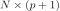

MorrisExperimentGrid¶
-
class
otmorris.MorrisExperimentGrid(*args)¶ MorrisExperimentGrid builds experiments for the Morris method starting from full p-levels grid experiments.
Available constructors:
MorrisExperimentGrid(levels, N)
MorrisExperimentGrid(levels, interval, N)
Parameters: - levels :
openturns.Indices Number of levels for a regular grid
- N : int
Number of trajectories
- interval :
openturns.Interval Bounds of the domain
Notes
With first constructor, we consider that initial experiment is a regular grid defined in . With second constructor, we consider that initial distribution model is uniform with bounds given by the interval argument. Also, the initial experiment is of type regular.
Examples
>>> import openturns as ot >>> import otmorris >>> # Number of trajectories >>> r = 10 >>> # Define a k-grid level (so delta = 1/(k-1)) >>> k = 5 >>> dim = 3 >>> experiment = otmorris.MorrisExperimentGrid([k] * dim, r) >>> X = experiment.generate()
Methods
generate(self)Generate points according to the type of the experiment. generateWithWeights(self, weights)Generate points and their associated weight according to the type of the experiment. getBounds(self)Get the bounds of the domain. getClassName(self)Accessor to the object’s name. getDistribution(self)Accessor to the distribution. getId(self)Accessor to the object’s id. getJumpStep(self)Get the jump step, specifying the number of levels for each factor that are increased/decreased for computing the elementary effects. getName(self)Accessor to the object’s name. getShadowedId(self)Accessor to the object’s shadowed id. getSize(self)Accessor to the size of the generated sample. getVisibility(self)Accessor to the object’s visibility state. hasName(self)Test if the object is named. hasUniformWeights(self)Ask whether the experiment has uniform weights. hasVisibleName(self)Test if the object has a distinguishable name. setDistribution(self, distribution)Accessor to the distribution. setJumpStep(self, jumpStep)Set the jump step, specifying the number of levels for each factor that are increased/decreased for computing the elementary effects. setName(self, name)Accessor to the object’s name. setShadowedId(self, id)Accessor to the object’s shadowed id. setSize(self, size)Accessor to the size of the generated sample. setVisibility(self, visible)Accessor to the object’s visibility state. -
__init__(self, *args)¶ x.__init__(…) initializes x; see help(type(x)) for signature
-
generate(self)¶ Generate points according to the type of the experiment.
Returns: - sample :
openturns.Sample Points that constitute the design of experiment, of size

- sample :
-
generateWithWeights(self, weights)¶ Generate points and their associated weight according to the type of the experiment.
Returns: Examples
>>> import openturns as ot >>> ot.RandomGenerator.SetSeed(0) >>> myExperiment = ot.MonteCarloExperiment(ot.Normal(2), 5) >>> sample, weights = myExperiment.generateWithWeights() >>> print(sample) [ X0 X1 ] 0 : [ 0.608202 -1.26617 ] 1 : [ -0.438266 1.20548 ] 2 : [ -2.18139 0.350042 ] 3 : [ -0.355007 1.43725 ] 4 : [ 0.810668 0.793156 ] >>> print(weights) [0.2,0.2,0.2,0.2,0.2]
-
getBounds(self)¶ Get the bounds of the domain.
Returns: - bounds :
openturns.Interval Bounds of the domain, default is
- bounds :
-
getClassName(self)¶ Accessor to the object’s name.
Returns: - class_name : str
The object class name (object.__class__.__name__).
-
getDistribution(self)¶ Accessor to the distribution.
Returns: - distribution :
Distribution Distribution used to generate the set of input data.
- distribution :
-
getId(self)¶ Accessor to the object’s id.
Returns: - id : int
Internal unique identifier.
-
getJumpStep(self)¶ Get the jump step, specifying the number of levels for each factor that are increased/decreased for computing the elementary effects. If not given, it is set to 1 for each factor.
Returns: - humpStep :
openturns.Indices Number of levels for each factot that are increased/decreased for computating the EE.
- humpStep :
-
getName(self)¶ Accessor to the object’s name.
Returns: - name : str
The name of the object.
-
getShadowedId(self)¶ Accessor to the object’s shadowed id.
Returns: - id : int
Internal unique identifier.
-
getSize(self)¶ Accessor to the size of the generated sample.
Returns: - size : positive int
Number of points constituting the design of experiments.
-
getVisibility(self)¶ Accessor to the object’s visibility state.
Returns: - visible : bool
Visibility flag.
-
hasName(self)¶ Test if the object is named.
Returns: - hasName : bool
True if the name is not empty.
-
hasUniformWeights(self)¶ Ask whether the experiment has uniform weights.
Returns: - hasUniformWeights : bool
Whether the experiment has uniform weights.
-
hasVisibleName(self)¶ Test if the object has a distinguishable name.
Returns: - hasVisibleName : bool
True if the name is not empty and not the default one.
-
setDistribution(self, distribution)¶ Accessor to the distribution.
Parameters: - distribution :
Distribution Distribution used to generate the set of input data.
- distribution :
-
setJumpStep(self, jumpStep)¶ Set the jump step, specifying the number of levels for each factor that are increased/decreased for computing the elementary effects. If not given, it is set to 1 for each factor.
Parameters: - humpStep :
openturns.Indices Number of levels for each factot that are increased/decreased for computating the EE.
Notes
The final jump step contains only integers, so the parameter argument is converted into a list of integer thanks to the floor operator.
- humpStep :
-
setName(self, name)¶ Accessor to the object’s name.
Parameters: - name : str
The name of the object.
-
setShadowedId(self, id)¶ Accessor to the object’s shadowed id.
Parameters: - id : int
Internal unique identifier.
-
setSize(self, size)¶ Accessor to the size of the generated sample.
Parameters: - size : positive int
Number of points constituting the design of experiments.
-
setVisibility(self, visible)¶ Accessor to the object’s visibility state.
Parameters: - visible : bool
Visibility flag.
- levels :